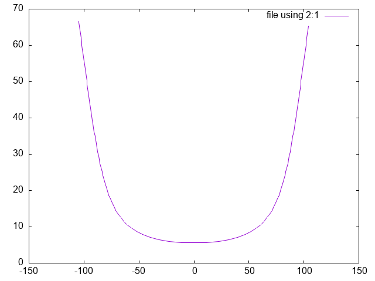
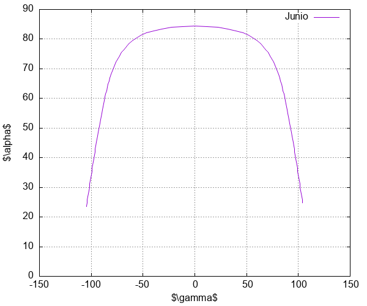

Gnuplot
Introducción
Gnuplot es un programa de línea de comandos que te permite realizar gráficas de una calidad impecable, las cuales tienen la calidad necesaria para ser publicadas en cualquier tipo de revista. Aunque Gnuplot pudiera parecer un programa complicado al inicio, es todo lo contrario, un programa muy amigable con la configuración correcta.
En general Gnuplot te permite graficar un conjunto de datos
Es un curso para usuarios de linux.
Instalación
Para instalar Gnuplot desde la linea de comandos:
## Debbian/Ubuntu sudo apt-get install gnuplot
## Archlinux sudo pacman -S gnuplot
Ejecución
archlinux➜ ᐅ gnuplot
G N U P L O T
Version 6.0 patchlevel 1 last modified 2024-05-13
Copyright (C) 1986-1993, 1998, 2004, 2007-2024
Thomas Williams, Colin Kelley and many others
gnuplot home: http://www.gnuplot.info
faq, bugs, etc: type "help FAQ"
immediate help: type "help" (plot window: hit 'h')
Terminal type is now qt
gnuplot>
Primera gráfica
Para iniciar vamos a utilizar los datos de un archivo llamado "junio.dat", es un archivo separados por tabs, que tiene dos columnas: cenit, acimut.
head ./data/junio.dat
cenit acimut 66.5503 -104.795100 66.3393 -104.698000 65.2827 -104.213800 64.2238 -103.731600 63.1626 -103.251000 62.0992 -102.771700 61.0337 -102.293500 59.9662 -101.816000 58.8967 -101.338900
Para graficar el archivo en gnuplot únicamente escribimos, previamente hay que ejecutar gnuplot, el siguiente comando:
plot "./data/junio.dat" using 2:1 with lines

Después de plot se indica entre comillas el nombre del archivo o la ruta, en este caso "./data/junio.dat" , seguido se indica las columnas que se utilizarán para realizar la gráfica using 2:1 2 para el eje de las abscisas y 1 para el eje de las ordenadas. Por último se indica como se dibujaran los puntos, en este caso con una linea with lines.
Titulos y etiquetas
Habiamos graficado la columna dos () Vs la uno
reset set xlabel 'gamma' set ylabel 'alpha' set yrange [0, 90] set grid plot "./data/junio.dat" using 2:(90-$1) with lines title "Junio"

PNG
set terminal png size 600,500 enhanced "Helvetica,20" set output './fig/junio.png' replot
Ahora tenemos una gráfica en un archivo png que no tiene la calidad que nosotros deseamos, por lo que en lugar de exportarlo en png, vamos a exportarlo en formato tex de LaTeX. Pero antes vamos a hablar de los script de gnuplo.
Script de Gnuplot
Escribir directamente en la terminal es tedioso, así que podemos escribir en un archivo de texto plano, en nuestro editor de confianza (en mi caso emacs) y posteriormente los ejecutamos en gnuplot.
Scritp de Gnuplot. Las extensiones que puede tener el archivo son .gnuplot o .gp. En mi caso utilizo una extensión gp para identificar los script de gnuplot.
reset set xlabel '$\gamma$' set ylabel '$\alpha$' set yrange [0, 90] set grid plot "junio.dat" using 2:(90-$1) with lines title "Junio"
load './gp/junio.gp'

LaTeX
Ahora que tenemos un archivo .gp
set xlabel '$\gamma$' set ylabel '$\alpha$' set yrange [0, 90] set grid plot "./data/junio.dat" using 2:(90-$1) with lines title "Junio" set terminal epsl col sol lw2 set output './fig/junio.tex' #replot
Ahora tenemos un archivo tex con la gráfica. Esta información ya es posible agregar a un documento de LaTeX, para que nosotros puedamos visualizarla vamos a escribir un prqueño texto de latex que nos permita obtener nuestra gráfica en un pdf.
\documentclass{article} \usepackage{graphicx} \usepackage{color} \usepackage{amsmath} \usepackage{amssymb} \usepackage{xcolor} \usepackage[activeacute, spanish]{babel} \usepackage[utf8x]{inputenc} \usepackage[T1]{fontenc} \definecolor{mWhite}{rgb}{1.0, 1.0, 1.0} \newcommand\white[1]{\textcolor{mWhite}{#1}} \spanishdecimal{.} \renewcommand{\v}[1]{{\boldsymbol #1}} \newcommand{\PROM}[1]{\left\langle #1\right\rangle} \pagestyle{empty}t \begin{document} \input{junio.tex} \end{document}